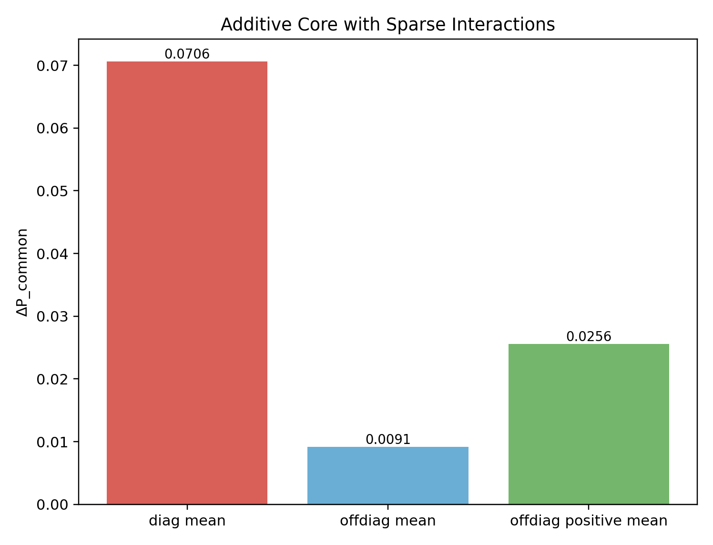
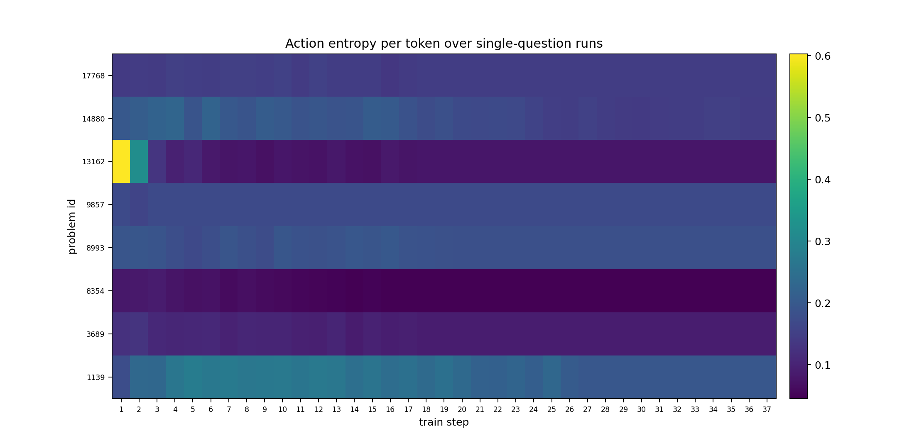
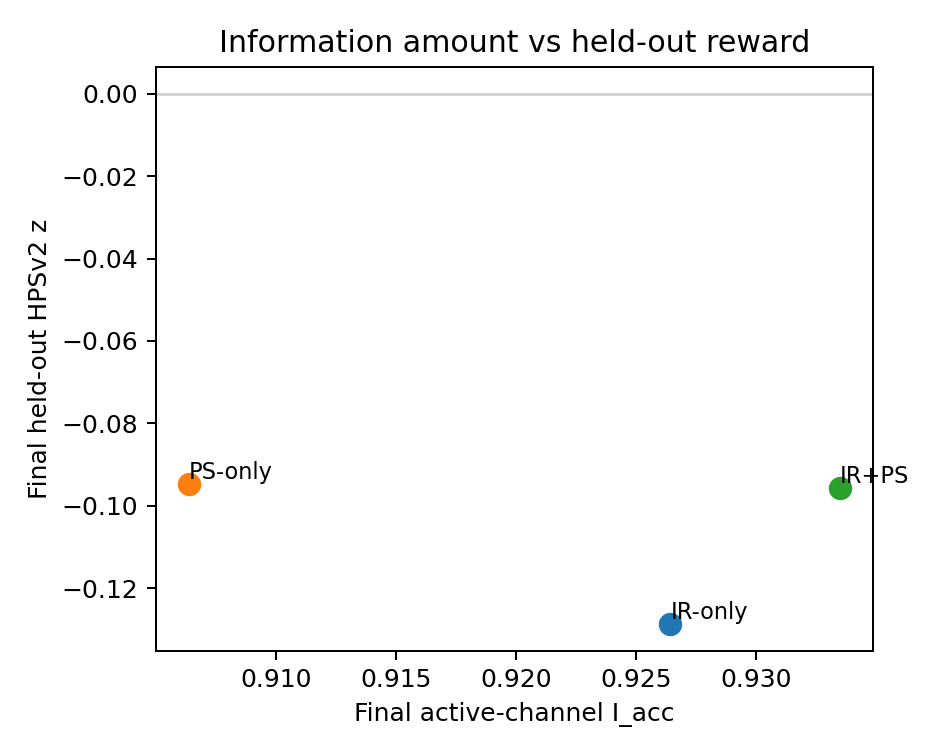

Multi-problem dynamics
多道题：多数信号近似可加，但相互作用较弱


如果题目之间相互作用弱，那么增加题数可以增加总信息量；但总上限仍然随固定题集规模受限。
Sharpness and geometry
收缩和几何可以同时画出来


左边看收缩，右边看题目在 transfer space 中的位置。几何关系告诉我们哪些题可以互相带动。
Watermelon picture
固定数据集上的 RL：把西瓜缩成籽
每个籽是一道题
原始模型是一个宽的输出分布。
固定题集上的 RL 会降低 action entropy，把概率质量收缩到若干个题目解法附近。
这些籽之间的距离，就是刚才由 transfer 定义出的数据集几何。
Diffusion extension
Diffusion 结果：多 reward 提供更宽的信息通道

最终 cross-reward matrix：IR+PS 在 ImageReward 和 PickScore 上最好，HPSv2 基本追平 PS-only。

最终 prompt-group 信息量：IR+PS 的 accessible information 最高。

信息量和 held-out HPSv2 的关系：IR+PS 有更丰富反馈，同时接近最强单 reward。
结论要谨慎说：multi-reward 没有严格赢过最强 single reward，但它给出最均衡的 reward profile，并让 active feedback information 最高。